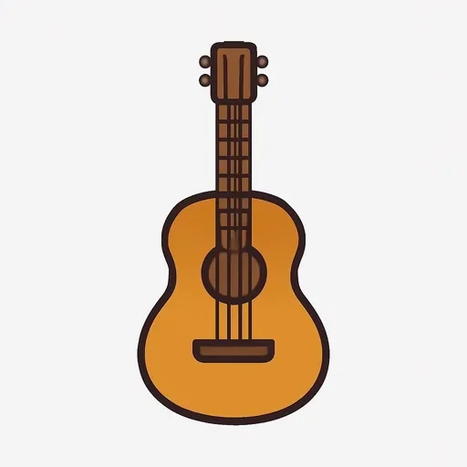
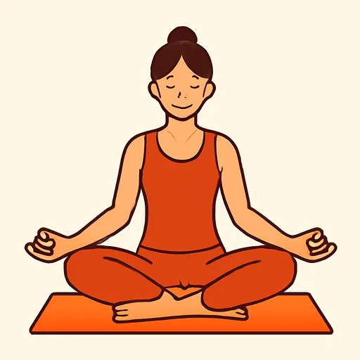
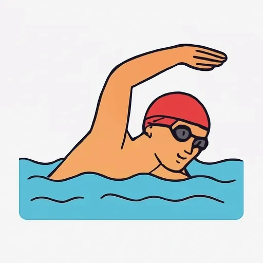
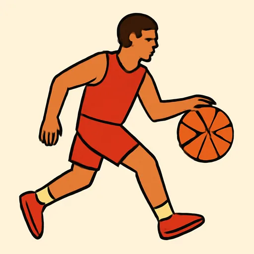
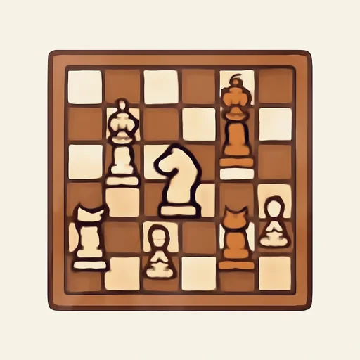
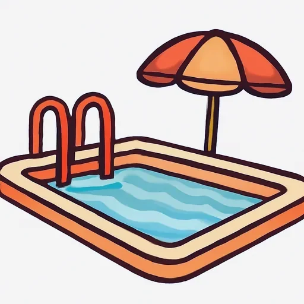

Черновик: урок написан, но преподаватель его ещё не вычитал.
Semana 15 · Día 1 — Aficiones y deportes
Неделя 15 · День 1 — Увлечения и спорт
Сегодня вы научитесь
- спрашивать «¿Qué haces en tu tiempo libre?» и отвечать на этот вопрос;
- выбирать правильный глагол: jugar a (мяч и настольные игры), tocar (инструмент), hacer и practicar (спорт без мяча);
- описать шесть своих увлечений, не перепутав «играть в» и «играть на».
1. Разминка (0–3 мин)
- Карточки: 10 слов (вчерашние и недельной давности).
- Проспрягайте вслух jugar (u→ue, с 10-й недели): juego, juegas, juega, jugamos, jugáis, juegan. Он понадобится через пять минут.
- Вопрос по прошлой неделе: ¿Qué ropa llevas hoy? ¿Te queda bien? Ответьте вслух двумя фразами.
2. Фонетика (3–6 мин)
g и j в словах об увлечениях. Повторение второй недели на новом материале: буква g читается то как [г], то как [х], а j — всегда как русское «х». Прочитайте вслух и запишите себя:
jugar · el juego · viajar · el ajedrez · el gimnasio · la guitarra · el yoga
Четыре строчки, которые это решают:
| Написано | Читается | Пример |
|---|---|---|
| j (везде) | [х] | jugar [хугар], viajar, ajedrez |
| ge, gi | [х] | gimnasio [химнасио] |
| ga, go, gu | [г] | jugar, yoga |
| gue, gui | [гэ], [ги] — u не читается | la guitarra [гитарра] |
Слово jugar содержит оба звука сразу: [ху-гар]. ✗ Не [жугар] (русское «ж») и не [джугар] (по-английски).
3. Новое (6–16 мин)
Пример
Матео из Мехико и Татьяна из Сочи познакомились на языковом обмене и
разговаривают по видео. Это два героя всей восьмой единицы. [AUDIO]
| Español | Русский |
|---|---|
| Mateo: ¡Hola, Tatiana! Soy Mateo, de Ciudad de México. ¿Qué haces en tu tiempo libre? | Привет, Татьяна! Я Матео, из Мехико. Что ты делаешь в свободное время? |
| Tatiana: ¡Hola! Yo vivo en Sochi, cerca del mar. Hago natación tres veces por semana. | Привет! Я живу в Сочи, у моря. Я три раза в неделю занимаюсь плаванием. |
| Mateo: ¿En el mar? | В море? |
| Tatiana: En invierno, no: en la piscina. Y toco la guitarra. ¿Y tú? | Зимой нет: в бассейне. И я играю на гитаре. А ты? |
| Mateo: Yo juego al fútbol los sábados. No toco la guitarra. | Я по субботам играю в футбол. На гитаре не играю. |
| Tatiana: ¿Juegas al baloncesto también? | В баскетбол тоже играешь? |
| Mateo: Al baloncesto, no. Hago yoga los lunes y practico natación en verano. | В баскетбол нет. По понедельникам занимаюсь йогой, а летом плаванием. |
| Tatiana: Mi padre juega al ajedrez todos los días y mi madre viaja mucho. | Мой папа каждый день играет в шахматы, а мама много путешествует. |
| Mateo: Mi afición favorita es leer: leo una hora antes de dormir. | Моё любимое увлечение — читать: я читаю час перед сном. |
| Tatiana: Yo también. ¿Hablamos el domingo? | Я тоже. Поговорим в воскресенье? |
Прочитайте диалог вслух. Подчеркните каждый глагол и слово, которое стоит сразу после него: juego al fútbol, toco la guitarra, hago yoga.
🌎 la piscina — бассейн в Испании и в большей части Америки. В Мексике (то есть у Матео дома) говорят la alberca, в Аргентине и Уругвае — la pileta. Учим piscina: её понимают везде.
Объяснение
Сначала сравните три русские фразы с их переводом:
Я играю в футбол. → Juego al fútbol. Я играю на гитаре. → Toco la guitarra. Я занимаюсь йогой. → Hago yoga.
В первых двух русских фразах глагол ОДИН И ТОТ ЖЕ — «играю», меняется только предлог: «в» или «на». По-испански меняется сам глагол: jugar и tocar — это два разных слова, и подставить одно вместо другого нельзя. Испанский делит увлечения не по вопросу «во что / на чём», а по тому, что у вас в руках.
| Чем занимаемся | Глагол | Примеры |
|---|---|---|
| игра с мячом или настольная игра | jugar a | juego al fútbol, al tenis, al baloncesto, al ajedrez, a las cartas |
| музыкальный инструмент | tocar | toco la guitarra, el piano |
| спорт и занятие без мяча | hacer | hago yoga, hago deporte, hago natación |
| вид спорта (чуть более «спортивно») | practicar | practico natación, practico yoga, practico un deporte |
Артикль — главная техническая деталь урока. После jugar a и tocar он обязателен, после hacer и practicar его нет:
| Глагол | Артикль | Пример |
|---|---|---|
| jugar a | обязателен; a + el = al (с 7-й недели) | jugar al fútbol, jugar a las cartas |
| tocar | обязателен | tocar la guitarra, tocar el piano |
| hacer | не нужен | hacer yoga, hacer deporte |
| practicar | не нужен | practicar natación |
🌎 В Мексике и в большой части Америки часто говорят jugar fútbol, без предлога (вы это видели на 10-й неделе), а само слово в Мексике нередко пишут futbol, без тильды. Мы учим jugar al fútbol: эта форма верна везде, и именно её говорит Матео в диалоге.
hacer или practicar? Для спорта без мяча годятся оба: hago natación = practico natación. practicar звучит чуть более спортивно и подходит любому виду спорта (practico fútbol — «я занимаюсь футболом»), но когда речь о самой ИГРЕ, о партии или матче, нужен jugar a: El sábado juego al fútbol — «в субботу я играю в футбол».
А многим увлечениям вообще не нужен вспомогательный глагол — они сами глаголы: leo (читаю), cocino (готовлю), viajo (путешествую), canto, bailo. ✗ Hago leer.
Вопрос дня — выучите целиком:
— ¿Qué haces en tu tiempo libre? — Что ты делаешь в свободное время? — Juego al tenis y toco el piano. — ¿Cuál es tu afición favorita? — Какое у тебя любимое увлечение? — Mi afición favorita es leer. (после es — инфинитив, как и по-русски: «моё любимое увлечение — читать»)
⚠️ Контраст с русским
- В русском один глагол и два предлога. «Играть в футбол» (винительный) и «играть на гитаре» (предложный): работу делает предлог, а глагол «играть» не меняется. «Заниматься» тоже один на всё: спортом, йогой, плаванием.
- В испанском наоборот: предлог почти ни при чём, а глаголов четыре, и границы между ними проходят в другом месте. Русское «играть» — это то jugar a, то tocar; русское «заниматься» — то hacer, то practicar. Выучить придётся не правило, а четыре готовых сочетания.
- Вы захотите сказать: ✗ Juego la guitarra. ✗ Juego en el fútbol. ✗ Juego a fútbol. ✗ Hago el yoga. → Правильно: ✅ Toco la guitarra. ✅ Juego al fútbol. ✅ Hago yoga. Первая ошибка — из русского «играю» (и из английского play the guitar); вторая — из русского «в» (en); третья — из русского отсутствия артикля; четвёртая — наоборот, артикль там, где его не бывает.
Что помогает: hacer deporte вы знаете с 10-й недели, и jugar с тех же дней спрягаете как единственный в языке глагол с u→ue. Нового сегодня только распределение — и два слова, tocar и practicar.
4. Практика (16–26 мин)
Упражнение А. Выберите нужный глагол и поставьте его в правильную форму.
Модель: Yo ______ el piano. (jugar / tocar) → Yo toco el piano.
- Mateo ______ al fútbol los sábados. (jugar / tocar)
- Tatiana ______ la guitarra. (jugar / tocar)
- Yo ______ yoga los lunes. (hacer / jugar)
- ¿Tú ______ al ajedrez? (jugar / tocar)
- Mi hermana ______ natación en la piscina. (practicar / tocar)
- Nosotros ______ deporte en el parque. (hacer / jugar)
- ¿Vosotros ______ al baloncesto? (jugar / tocar)
- Mis padres ______ a las cartas los domingos. (jugar / hacer)
- Yo no ______ la guitarra, pero ______ mucho. (tocar / leer)
- ¿Usted ______ al tenis? (jugar / hacer)
Упражнение Б. Дополните текст. Банк слов (одна форма нужна дважды):
hace · hago · juega · juego · practica · toca · toco
Me llamo Mateo. En mi tiempo libre (1) ______ al fútbol: es mi afición favorita. Los lunes (2) ______ yoga en un gimnasio cerca de casa. No (3) ______ ningún instrumento, pero mi hermana (4) ______ el piano muy bien. Mi padre (5) ______ al ajedrez todos los días y mi madre (6) ______ deporte en el parque. Tatiana, mi amiga de Sochi, (7) ______ la guitarra y (8) ______ natación tres veces por semana.
ningún instrumento — «ни на одном инструменте». Пока возьмите целым куском; разберём в 19-й единице.
Упражнение В. Переведите на испанский.
- Я играю в футбол по субботам.
- Она играет на гитаре.
- Мы занимаемся йогой по понедельникам.
- Ты играешь в шахматы?
- Мой брат занимается плаванием в бассейне.
- Что ты делаешь в свободное время?
- Я не играю на гитаре, но много читаю.
- Моё любимое увлечение — путешествовать.
5. Выход (26–29 мин)
Напишите шесть своих увлечений — по одной фразе на каждое, с правильным глаголом. Это и есть сегодняшний выход: шесть фраз, шесть раз сделанный выбор между jugar a, tocar, hacer / practicar и «просто глаголом».
Начните каждую фразу с Juego al… / Toco… / Hago… / Practico… / Leo… / Cocino… / Viajo… и добавьте, когда или как часто (los sábados, dos veces por semana, en verano) — частотность вы знаете с 10-й недели.
Образец: Juego al tenis los domingos. Toco la guitarra media hora al día. Hago yoga dos veces por semana. No practico deporte en invierno. Leo antes de dormir. Cocino los fines de semana.
Потом прочитайте все шесть вслух — и проверьте артикли: al, la, и ничего после hago.
6. Итог (29–30 мин)
- [ ] Я спрашиваю ¿Qué haces en tu tiempo libre? и отвечаю на этот вопрос.
- [ ] Я не путаю juego al fútbol и toco la guitarra.
- [ ] Я помню, что после hacer и practicar артикля нет.
- Добавьте слова дня в колоду — существительные с артиклем. Завтра: как сказать не «я играю», а «мне НРАВИТСЯ играть».
Словарь дня
| Español | Русский | Пример |
|---|---|---|
| el tiempo libre | свободное время | ¿Qué haces en tu tiempo libre? |
| la afición | увлечение, хобби | Mi afición favorita es leer. |
| tocar | играть (на инструменте) | Toco la guitarra. |
| practicar | заниматься (видом спорта) | Practico natación en verano. |
 la guitarra |
гитара | Tatiana toca la guitarra. |
 el yoga |
йога | Hago yoga los lunes. |
 la natación |
плавание | Practico natación tres veces por semana. |
 el baloncesto |
баскетбол (🌎 el básquet) | ¿Juegas al baloncesto? |
 el ajedrez |
шахматы | Mi padre juega al ajedrez. |
 la piscina |
бассейн (🌎 la alberca, la pileta) | Hago natación en la piscina. |
Ответы
А. 1. juega al fútbol · 2. toca la guitarra · 3. hago yoga · 4. ¿juegas al ajedrez? · 5. practica natación · 6. hacemos deporte · 7. ¿jugáis al baloncesto? · 8. juegan a las cartas · 9. no toco la guitarra, pero leo mucho · 10. ¿juega al tenis? (usted — 3-е лицо: juega, не juegas).
Б. 1. juego · 2. hago · 3. toco · 4. toca · 5. juega · 6. hace · 7. toca · 8. practica. — Дважды нужна форма toca (сестра и Татьяна).
В. 1. Juego al fútbol los sábados. — русское «в» тянет за собой en: ✗ juego en el fútbol. Нужен a, а a + el сливается в al. · 2. Toca la guitarra. — «играть на» — это tocar, и артикль la обязателен: ✗ toca guitarra. · 3. Hacemos yoga los lunes. — после hacer артикля нет: ✗ hacemos el yoga. · 4. ¿Juegas al ajedrez? — шахматы по-испански единственного числа: el ajedrez, поэтому al, а не a los. · 5. Mi hermano practica natación en la piscina. — годится и hace natación; оба без артикля. · 6. ¿Qué haces en tu tiempo libre? — выучено целиком; tu без тильды (притяжательное). · 7. No toco la guitarra, pero leo mucho. — «читать» не требует вспомогательного глагола: ✗ hago leer. · 8. Mi afición favorita es viajar. — после es стоит инфинитив, как по-русски: «моё любимое увлечение — путешествовать».